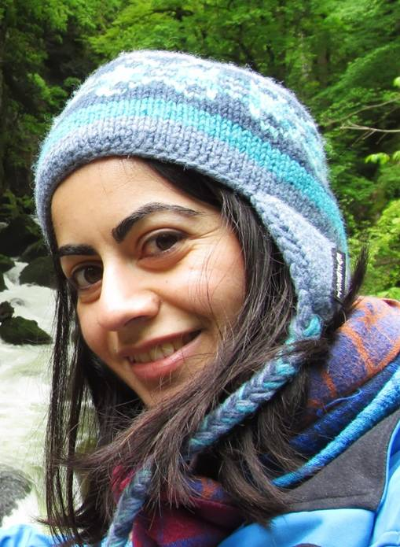
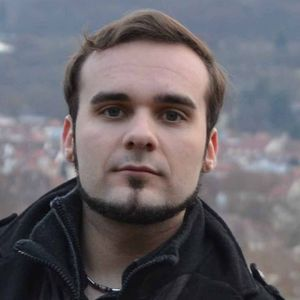
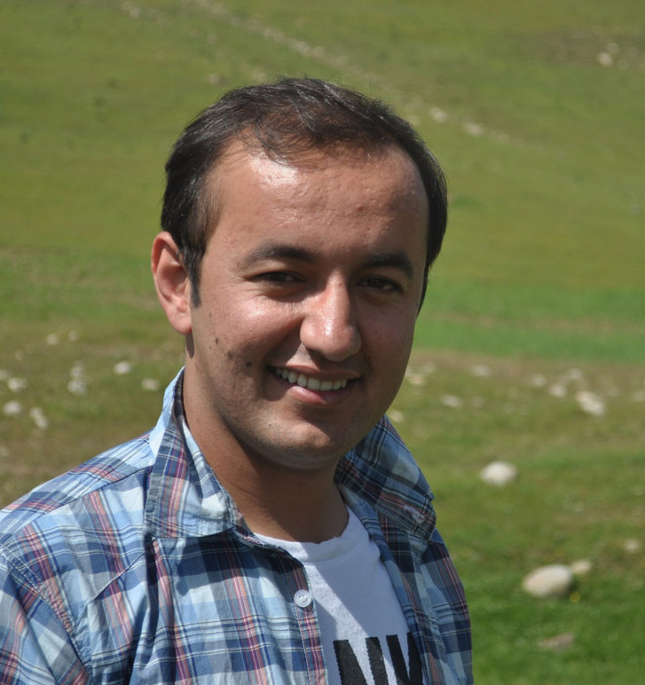
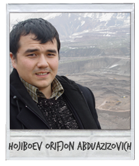
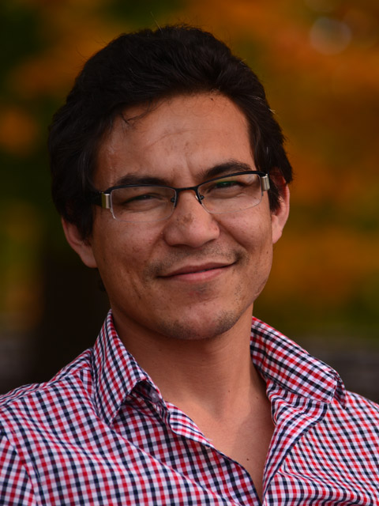
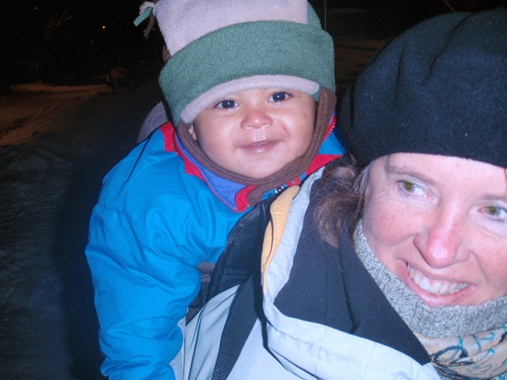
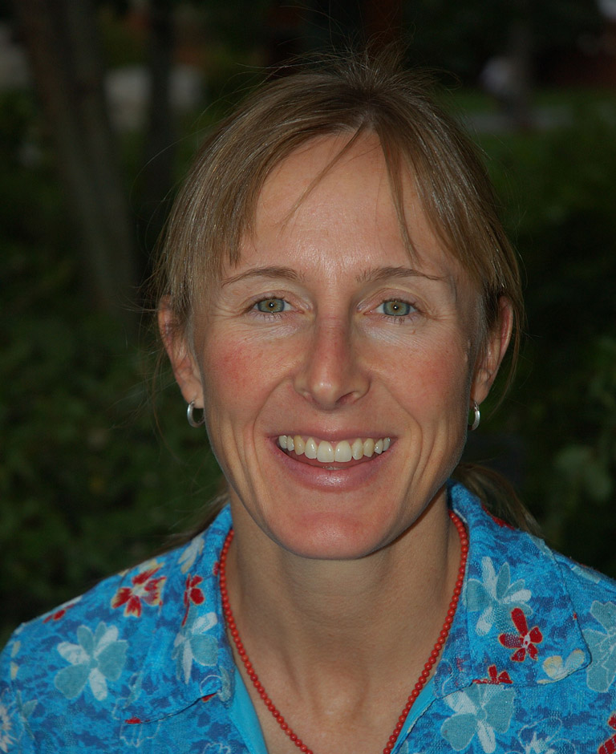

Earthquake Education in the Global Persian Community

Solmaz Mohadjer
Solmaz Mohadjer, Founder
I work to bridge the gap between scientists and the public in regions of high geohazards risk exposure. As a geophysicist, I have used GPS geodesy to quantify regions of high strain in Central Asia that are at great risk of catastrophic earthquakes. As an educator, I apply my experiences with Teachers Without Borders in China to lead earthquake education activities for students, teachers and trainers in Central Asia. I currently apply remote sensing techniques to study the neotectonics and geodynamics of Central Asia at the University of Tuebingen. My goal is to cultivate, support and revive elements of indigenous safety consciousness within Persian-speaking communities through the communication of scientific data.
solmaz.mohadjer@gmail.com

Sebastian Mutz
Sebastian Mutz, Science Coordinator in Europe
I am a climate scientist at the University of Tuebingen, Germany, and my research primarily focuses on the interaction of Earth systems with past, present and future climates. I take particular interest in the impacts of ongoing climate change on glaciers and water security in Central Asia, as well as in earthquake related hazards and resilience building of the affected communities. I believe that scientifically informed action and education is required for earthquake disaster risk reduction, and the approach taken by ParsQuake allows me to contribute to the safety of Persian communities in such a way.
sebastian@mutz.science

Najibullah Kakar
Najibullah Kakar, Project Coordinator in Afghanistan
I am a Civil Engineer currently carrying out disaster risk reduction activities in northern Afghanistan with the Norwegian Afghanistan Committee. I make GIS-based hazard vulnerability capacity assessment maps for local communities and assist them with understanding and reducing their risk to hazards. I also provide ground support for conducting scientific investigations that quantify seismic hazards in the region with results directly connected to the safety of the Afghan people. I believe we can save lives through awareness raising training and community outreach, especially focusing on women and children who are the most vulnerable groups in our communities. Through ParsQuake, I have the opportunity to contribute to the safety of Persian communities worldwide.
najib.kakar@nacaf.org

Orifjon Hojiboev, Project Coordinator in Tajikistan
I am an earthquake engineer at the Tajik Institute of Earthquake Engineering and Seismology in Dushanbe. I develop seismic microzonation maps for Dushanbe and the surrounding areas. As part of the Central Asia Seismic Risk Initiative program, I help to create a shared, distributed, regional database that identifies areas exposed to earthquake risks and critical facilities that could have a severe impact on recovery efforts if damaged. I also help to organize earthquake risk reduction training workshops, and provide ground support for outreach and education efforts in schools around Dushanbe. I believe raising peoples' knowledge about natural phenomena is a critical step towards risk reduction.
orifjon_83@yahoo.com

Ikramuddin Bahram
Ikramuddin Bahram, Project Consultant for Afghanistan and Pakistan
I am a Fulbright Scholar and a geologist at the University of Arkansasa. I have studied mountain hazard and risk in the Pamir mountains with Focus Humanitarian Assistance in Afghanistan. I graduated from the University of Peshawar in Pakistan with a Bachelor of Science in geology. My thesis research involved the creation of flood hazard maps and flood zones of the Kabul River. I am very excited to bring earthquake education to the Persian speaking communities of my country, Afghanistan, and the Afghan immigrant communities living in Pakistan.
Ikramadel@gmail.com

Christine Stickler
Christine Stickler, Curriculum Consultant
I have taught thousands of children and adults the simple technique of single signature binding and it brings me great joy to see it brought to young people in Central Asia. I have been helping young people find a voice through their writing and publishing of books for over 25 years. I am currently serving as director of The Pipeline Project at the University of Washington (UW). Our program recruits, trains and places undergraduate students in K-12 settings as tutors and mentors. Prior to coming to the UW, I was the founder and director of the Seattle Youth Involvement Network, a city-wide youth advocacy program established in 1988. I have also worked as an educator and educational consultant in the United States, Central America and Europe.
castick@u.washington.edu

Sarah Halvorson
Sarah Halvorson, Project Consultant
My research focuses broadly on vulnerability and socio-ecological resilience of families and communities to mountain hazards in high Central Asia. From years of working and living with families in the Karakoram, Himalaya, Pamir, and Tien Shan, I have developed a deep admiration for the knowledge that mountain people possess about the physical environments in which they reside. Earthquake hazards are of particular concern to local people owing to their potential to cause catastrophic damage and impact. Throughout this region, there is a critical need for science-based earthquake education that is designed with the overarching goal of actively involving local people in the process of earthquake disaster risk reduction.
sarah.halvorson@umontana.edu